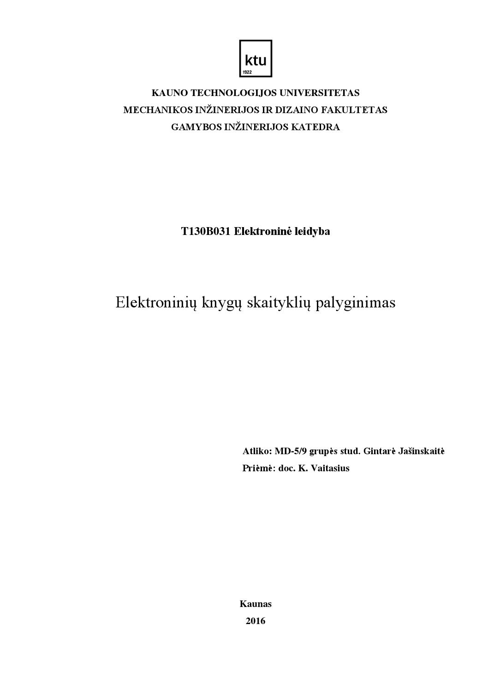

Kaip išsirinkti elektroninę knygų skaityklę? | TECHNORAMA GIDAS
- Elektroninės ir skaitmeninės knygos, nemokamos e. knygos ...
Viena didžiausių pasaulinių „E Ink“ elektroninių knygų gamintojų „PocketBook“ taip pat dalyvavo 17-ojoje tarptautinėje Vilniaus knygų mugėje, vykusioje 2016 m. vasario 25–28 dienomis. „PocketBook“ dalijosi ekspozicijos vietą su savo pagrindiniu mažmeninės prekybos partneriu Lietuvoje – „Topo Centru“.Ši partnerystė trunka jau ilgiau nei trejus metus. - Elektroninės knygų skaityklės ir dideli jų privalumai ...
Elektroninės knygų skaityklės – šių laikų išradimas, palengvinantis daugelio knygų mylėtojų kasdienybę. Specialus ekranas yra toks pat draugiškas akims, kaip ir popierinis knygos lapas, o talpios baterijos energijos užteks net kelioms savaitėms. - Elektroninės knygų skaityklės - Kompextra
Palygink skirtingų parduotuvių kainas Nuo 82.49 € Elektroninės knygų skaityklės Akcijos, atsiliepimai. - Elektroninės knygų skaityklės internetu pigiau | URMO.LT
Taip, elektroninės knygų skaityklės yra tikras gėris, bet šiuo metu didžiausias kai kurių (ypač Kindle) minusas yra blogas .pdf formatų palaikymas: arba raidės mažos, arba bet kaip pavertus dar reikia srcolinti tekstą kiekviename puslapyje. - Elektroninės skaityklės pliusai ir minusai – Veni Vidi
Elektroninės knygų skaityklės. Naujovės dažniausiai visada yra populiarios. Bent jau mūsų laikais. Nauji dalykai pasitikėjimo nekėlė, ko gero, viduramžiais, kai už atradimą galėjai padėti ir galvą. Dabar viskas gerokai pasikeitę, pokyčiai ir naujovės yra laukiamos, jas bemat pasigauna inovatyvūs žmonės, daugiausia ... - Elektroninės knygų skaityklės - kompiuteriai365.lt
Naujos elektroninės KNYGŲ SKAITYKLĖS Amazon KINDLE, NOOK, KOBO. Su GARANTIJA ! Новые электронные книги Amazon KINDLE, NOOK, KOBO, Pocketbook. С гарантией ! New eBook reader, eReader. Elektroninių knygų skaitytuvas, elektroninių knygų skaityklė. KINDLE skaityklės: Amazon KINDLE 7 nauja su tarpt. - Eleketroninės skaityklės - Elektroninės knygų skaityklės ...
Elektroninės – tai tos pačios knygos, kurias jūs skaitote atspausdintas ant popieriaus, tik išleistos elektroniniame formate. Jas galima atidaryti ir skaityti kompiuteryje, mobiliajame telefone ar specialiame eknygoms skaityti skirtame įrenginyje – elektroninių knygų skaityklėje. Spauskite čia ir sužinokite daugiau > - Kaip išsirinkti elektroninę knygų skaityklę? | TECHNORAMA ...
Tuo tarpu peršokus prie elektroninės skaityklės, visos bėdos dingo, ir kelių šimtų puslapių knygą įveikiau vos per kelias dienas. Nesupraskite manęs klaidingai – namuose vis dar iš lėto lipdau savo asmeninę mylimiausių knygų biblioteką ir ja kasdien gėriuosi, tačiau, vertinant praktiškumą ir patogumą, pirmenybę vis ... - Elektroninės knygų skaityklės - kainos nuo 82.49 ...
Skaitmeninių knygų skaityklės palaiko įvairius failų formatus: MOBI, EPUB, PDF ir kitus. Žinoma, neprivalote visiškai atsisakyti tradicinių knygų. Skaitmeninių knygų skaityklė gali pasitarnauti visur ten, kur tiesiog po ranka negalėsite turėti popierinės knygos arba tai bus paprasčiausiai nepatogu. - Aukščiausios klasės elektroninių knygų skaityklės ...
Knygų skaityklės; Knygų skaityklės. 1 Prekės. Rodyti. per puslapį . Rodyti: Tinkleliu Sąrašu Rūšiuoti pagal. E-skaityklė iRiver EB02 / 6' 199,99 € PIRKTI ...

MENU MENU Naujienos Produktų apžvalgos Televizoriai Audio / Video / Foto Kompiuterinė technika Mobilieji telefonai Išmanieji laikrodžiai Transporto priemonės Laisvalaikio prekės Buitinė technika Sveikata ir grožis Pirkimo gidas Mikrosvetainės Parduotuvė Kontaktai
Kaip išsirinkti elektroninę knygų skaityklę?
0Šie patarimai leis sužinoti, kaip veikia elektroninės skaityklės ir padės išsirinkti tinkamą modelį.
Vis daugiau leidyklų leidžia elektronines knygų versijas. Jas galima skaityti kompiuteryje, planšetėje ar net telefono ekrane. Tačiau patogiausia tai daryti naudojant elektroninę knygų skaityklę. Šioje apžvalgoje papasakosime, kaip veikia knygų skaityklės, aptarsime jų privalumus bei trūkumus.
Kas yra knygų skaityklė?
Tai nedidelis specializuotas įrenginys, skirtas elektroninių dokumentų skaitymui. Dažniausiai jis turi nespalvotą 5-6 colių įstrižainės elektroninio popieriaus ekraną. Tokie prietaisai be papildomo įkrovimo gali dirbti kelias savaites ar net mėnesius. El. knygų skaityklių gamintojai dažniausiai naudoja patobulintą elektroninio popieriaus atmainą „E Ink“ (elektroninį rašalą). Elektroninis popierius vartoja elektrą tik tuomet, kai reikia rodomą vaizdą pakeisti kitu (pvz., verčiant knygos puslapius). Bene didžiausias el. knygų skaityklių privalumas – jos nemirga ir nevargina akių, o vaizdas ekrane primena tradiciniame popieriaus lape išspausdintą tekstą.
Kas yra elektroninis popierius?
Nors elektroninio popieriaus ekranas vadinamas ekranu, tačiau jame rodomas vaizdas gerokai skiriasi nuo televizorių, kompiuterių ar mobiliųjų įrenginių ekranų. Tradiciniai ekranai turi foninio apšvietimo sistemą ir nuolat mirga. Žmogaus smegenys tokio mirgėjimo nesugeba užregistruoti, tačiau jis vargina akis ir blaško dėmesį. Todėl kompiuterio ar telefono ekrane sunku skaityti ilgus tekstus.
Elektroninis popierius leidžia išspręsti šią problemą. Šio tipo ekranai neturi foninio apšvietimo ir visiškai nemirga. Jei tradiciniuose ekranuose vaizdas atnaujinamas mažiausiai 50 kartų per sekundę, tai elektroninio popieriaus įrenginiuose – tik tada, kai reikia atversti naują puslapį. Vaizdas elektroninio popieriaus ekrane labai primena paprastą knygos puslapį. Todėl skaitant lengva sutelkti dėmesį, o akys nepavargsta net po kelias valandas trunkančio skaitymo.
Kaip veikia elektroninis popierius?
Kodėl elektroninio popieriaus ekranas taip primena tradicines knygas? Jis sudarytas iš milijonų žmogaus plauko storio kapsulių, kurios užpildytos permatomu skysčiu. Šiame skystyje plaukioja mažyčiai juodos ir baltos spalvos rašalo rutuliukai. Balti rutuliukai turi teigiamą krūvį, o juodi – neigiamą. Abiejose ekrano pusėse esantys elektrodai sukuria teigiamą arba neigiamą elektros lauką ir priverčia rutuliukus išsirikiuoti reikiama seka. Vienos dalelės pakyla į kapsulių paviršių, o kitos nusileidžia žemyn: taip sukuriamas juodas raidžių siluetas ir baltas teksto fonas. Elektros laukas būna įjungtas labai trumpą laiką, kol rutuliukai užima savo poziciją. Tada jie sustingsta vietoje ir laukia naujos komandos: kol skaitome el. knygos puslapį, elektra nėra vartojama.
Kaip ir tradicinis knygos lapas, elektroninis popierius pats nešviečia, tik atspindi ant jo krintančius šviesos spindulius. Saulėtą dieną telefono ar planšetės ekrane sunku ką nors įžiūrėti net nustačius didžiausią ekrano šviesumą. Tuo tarpu knygų skaityklė leidžia mėgautis idealiai ryškiu tekstu.
Skaitykle galima naudotis ir prieblandoje ar visiškoje tamsoje. Mat daugelis daugelis naujų modelių turi įmontuotus LED apšvietimo elementus. Jie yra statomi ekrano kraštuose ir apšviečia ekrano paviršių, nevargindami mūsų akių.
Elektroninių skaityklių privalumai
– Elektroninio popieriaus ekranas nevargina akių, neblaško dėmesio. Galima skaityti prieš miegą nebijant, kad sutriks poilsio režimas.
– Tekstas gerai matomas žiūrint į ekraną bet kuriuo kampu.
– Elektroninio popieriaus ekranas nemirga ir neblizga. Jį patogu naudoti saulėtą dieną.
– Ilgai laikanti baterija. Net intensyviai naudojant skaityklę, prietaisą teks krauti ne dažniau nei kartą į kelias savaites.
– Svoris ir dydis. Skaityklė yra lengvesnė ir mažesnė už tradicinę knygą ar planšetinį kompiuterį. Todėl ją patogu laikyti ir valdyti viena ranka.
Elektroninių skaityklių trūkumai
– Lėtai atsinaujinantis vaizdas. Elektroninio popieriaus ekranas taupo elektros energiją, tačiau negali atnaujinti vaizdo taip greitai kaip tradiciniai kompiuterių ir telefonų ekranai.
– Nespalvotas vaizdas. Nors gamintojai yra sukūrę spalvotus elektroninio popieriaus ekranus, tačiau jų rodomas vaizdas būna išblukęs. Todėl knygų skaitymui pritaikytose skaityklėse dažniausiai naudojami nespalvoti, natūraliai tekstą atkuriantys ekranai.
– Prastesnis, lyginant su tikru popieriumi, vaizdo kontrastingumas. Skaityklės rodomo teksto fonas yra šiek tiek pilkšvas arba gelsvas. Tačiau skirtumą pastebime tik lygindami jį su knygos lapu.
Kam tinka elektroninės skaityklės?
– Daug keliaujantiems žmonėms. Nedidelis 6 colių elektroninio popieriaus ekraną turintis prietaisas sveria vos 150-250 gramų, o jame galima nešiotis visą biblioteką!
– Skaitantiems daug elektroninių leidinių.
– Norintiems sutaupyti pinigų. Elektroninės knygos paprastai kainuoja pigiau nei popierinės versijos.
– Turintiems didelę elektroninių knygų kolekciją.
– Besimokantiems užsienių kalbų. Internete galima rasti ir įsigyti daugybę elektroninių knygš įvairiosiomis pasaulio kalbomis.
– Turintiems regos sutrikimų. Jiems ypač praverčia galimybė padidinti teksto šriftą.
Elektroninių knygų formatai
Knygų skaityklės sugeba atidaryti įvairius knygų formatus. Deja, ne visos ir ne visus. Todėl renkantis skaityklę būtina atsižvelgti į jos palaikomų formatus ir įsitikinti, ar ji sugebės atidaryti mus dominančias knygas.
ePUB
Pasaulinis elektroninių knygų standartas. Skaitytojas gali keisti teksto šriftą ir dydį. EPUB knygose būna lentelių, formulių, grafikų ir paveikslėlių. Šį formatą supranta absoliuti dauguma elektroninių skaityklių. Išskyrus – „Amazon Kindle“. Norint skaityti EPUB knygas su šiuo įrenginiu, teks failus konvertuoti į MOBI formatą. Deja, konvertuoti nepavyks nuo kopijavimo apsaugotų (DRM) failų. Juos galima naudoti tik šį standartą palaikančiose skaityklėse.
MOBI, PRC
Šio formato knygas nuskaito „Amazon Kindle“ skaityklės. Jį taip pat supranta ir „Pocketbook“ įrenginiai. Savo galimybėmis MOBI artimas EPUB. Naudojant papildomas programas, pvz., „ Calibre “, galima elektronines knygas greitai konvertuoti iš vieno formato į kitą.
FB2
Rusijoje paplitęs knygų formatas. Jį lengva konvertuoti į EPUB arba MOBI.
TXT, DOC, DOCX, RTF, HTML
Nors šių elektroninių dokumentų formatų negalima vadinti tikromis elektroninėmis knygomis, tačiau daugelis skaityklių juos nuskaito arba suteikia galimybę greitai konvertuoti į prietaisui suprantamą formatą.
PDF
Daugelis vartotojų klaidingai laiko PDF elektroninių knygų formatu, tačiau šis elektroninių dokumentų standartas bene prasčiausiai tinka elektroninėms skaityklėms. PDF skirtas popierinių dokumentų elektroninių versijų saugojimui. Jis užtikrina galimybę perkelti elektroninį leidinį iš vieno įrenginio į kitą, išlaikydamas jo išvaizdą, struktūrą bei šriftus. Todėl skaitydami PDF failus mažame skaityklės ekrane dažniausiai matysime tik puslapio dalį arba gerokai sumažintą vaizdą. PDF failų skaitymui geriau tinka kompiuteris arba didelės įstrižainės ekraną turinti planšetė.
DjVU
Formatas, leidžiantis saugoti nuskenuotas knygas, žurnalus ar rankraščius. Kai kurios skaityklės (pvz., „Pocketbook“) šį formatą supranta. Tačiau patogiausia tokius dokumentus skaityti kompiuteryje arba didelėje planšetėje.
Kaip pasirinkti elektroninę skaityklę?
Nors skaityklės naudoja vienodo tipo ekranus, tačiau jų galimybės gerokai skiriasi. Renkantis prietaisą, verta atsižvelgti į keletą dalykų:
– Dydis. Priklausomai nuo mūsų poreikių, galime rinktis skirtingos įstrižainės ekranus turinčias skaitykles. Didesni nei 6 colių ekranai gerai tinka techninės literatūros ir periodikos skaitymui. Knygos su popieriniu viršeliu (angl. „paperback“) lapo dydį atitinkantis 6 colių įrenginys yra pakankamai lengvas, patogus ir universalus. Tuo tarpu 5 colių skaityklės turėtų sudominti moksleivius bei daug keliaujančius žmones.
– Valdymas. Absoliuti dauguma skaityklių turi liečiamuosius ekranus. Patogu, kai šalia to yra ir puslapių vartymo mygtukai, mat jais galima naudotis užsidėjus pirštines. Deja, ne visos skaityklės turi į lietuvių kalbą išverstą valdymo aplinką. Šia galimybe gali pasigirti „Pocketbook“ modeliai.
– Palaikomi formatai ir elektroniniai knygynai. Būtinai išsiaiškinkime, ar skaityklė galės atidaryti mums reikalingus knygų formatus. Net 15 formatų palaiko „Pocketbook“ modeliai. Tuo tarpu „Kindle“ pasitenkina vos keliais. Tačiau ši skaityklė suteikia galimybę patogiai pirkti angliškas elektronines knygas iš „Amazon“ parduotuvės ir skaityti jas visuose savo įrenginiuose: skaityklėse, kompiuteriuose, planšetėse ar telefonuose.
– Integruotas apšvietimas. Gerai, kai skaityklė turi LED apšvietimo funkciją. Ji leidžia skaityti prieblandoje arba tamsoje. Apšvietimo ryškumas turi būti reguliuojamas, kad nevargintų akių ir užtikrintų tinkamą teksto kontrastą.
– Vidinė atmintis . Elektroninės knygos užima nedaug vietos. Todėl joms pilnai pakaks 2-4 GB vidinės atminties. Gerai, kai prietaisas turi papildomą atminties kortelės lizdą. Ji ypač praverčia, kaip skaityklė audio knygų klausymo funkciją.
– Belaidis „Wi-Fi“ ryšys. Įkėlinėti knygas laidu nepatogu, daug lengviau tai padaryti bevieliu tinklu. Nemažai skaityklių siūlo internetines failų saugyklas, kuriuose galima laikyti visą savo elektroninę biblioteką.
– Papildomos galimybės. Žodynai, kurie praverčia mokantis užsienio kalbų, teksto vertimas į kalbą – nepamainomas pagalbininkas regos sutrikimų turintiems žmonėms. Deja, ši funkcija vis dar nepalaiko lietuvių kalbos.
Pirkimo gidas 10Naujesnis straipsnis „LG TurboWash“ skalbyklė – švarūs skalbiniai per stebėtinai trumpą laiką Senesnis straipsnis Nepraleisk progos, gauk „Windows 10“ nemokamai!
COMMENTS
Populiarėja
MOBICOOL U26 DC: lengvas ir patikimas
JBL Boombox: Tai bent garsiakalbis!
Marshall Major III Bluetooth: legendinis garsas
FNATIC Duel: Ausinės tikram žaidėjui!
Samsung Q9FN: tai bent televizorius!
IFA 2017 topai: QLED žaidimų monitorius „Samsung CHG90“
Populiariausios apžvalgos
Philips Sonicare: elektriniai dantų šepetėliai
„Samsung“ pristatė naująjį „Galaxy S9“ telefoną!
BIGGRILL: naujos „kamado“ kepsninės
© 2019 – Technorama.lt Parduotuvė Kontaktai